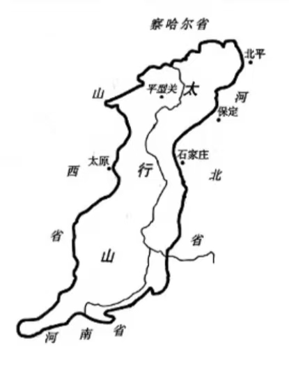
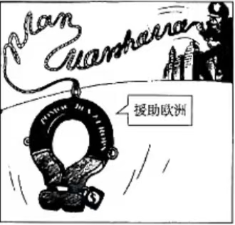

海淀区2025-2026学年第二学期期中练习
①中央集权的趋势不断增强 ②秦国的中央集权程度较高
③秦的货币样式被各国采纳 ④城市转向以经济功能为主
解析：秦国兵器作坊由丞相、郡守等上级官员主管，说明中央对地方的直接管控较强，这体现了②秦国中央集权程度较高。战国中期以后各国普遍由国家统一发行货币，打破了地方私铸的局面，这反映了①中央集权趋势不断增强。③"秦的货币样式被各国采纳"在材料中并未体现（各国各自发行货币）；④"城市转向以经济功能为主"与材料讨论的政治管控无关。故①②正确，选A。
解析：豪强地主势力膨胀，大量兼并土地，使农民成为他们的依附民而非国家编户，国家直接控制的户口减少，从而丧失大量税源和兵源。A项外戚宦官交替专权主要是东汉中后期皇帝年幼时出现的政治现象，与豪强地主势力膨胀无直接因果；B项表述与史实相反——农民对豪强的人身依附关系实际上是加强了而非松弛；D项王莽篡位发生在西汉末年，时间上不符。故选C。
①遭到鲜卑贵族反对激化阶级矛盾 ②可以利用士族声望收揽中原人心
③有利于经济恢复和完成北方统一 ④便于学习南朝制度争取华夏正统
解析：北魏重用南方降人（如东晋宗室、南齐王肃等），②可以利用琅琊王氏等南方士族的声望来收揽中原人心，巩固统治；④孝文帝命王肃依照南朝制度厘定朝仪、官制、律令、礼乐，正是为了学习南朝典章制度，争取华夏正统地位。①"遭到鲜卑贵族反对"在材料中并未提及；③北方统一早在439年灭北凉时已基本完成，与重用南方降人无直接关系。故②④正确，选D。
解析：忽必烈下诏允许百姓耕种因战乱抛荒的空闲田地，并规定原主逾期不归则耕种者可继续耕作。这体现了元朝政府鼓励垦荒、恢复中原地区农业生产的政策。A项"取消边境屯田"材料并未提及；C项以白银丝绸取代纸币是元朝中后期的币制改革，与材料无关；D项"边疆内地一体化"材料未涉及。材料核心是恢复农业生产，故选B。
①重视儒家传统的纲常伦理 ②发展了"格物致知"学说
③体现了"致良知"的理论 ④带有客观唯心主义的倾向
解析：①王守仁强调忠孝之理完全由内心产生，说明他重视儒家传统的纲常伦理（忠、孝）。③"致良知"是王守仁心学的核心命题，认为良知人人固有，忠孝之理是良知的体现，故③正确。②王守仁反对朱熹"格物致知"的向外求理，主张"心即理"，因此说"发展了格物致知学说"是错误的。④王守仁是主观唯心主义（"心外无理"），"客观唯心主义"是朱熹理学。故①③正确，选A。
①"中国认明朝鲜国确为完全无缺之独立自主。"
②"英人如何科罪，由英国议定章程法律，发给领事官照办。"
③"越南诸省与中国边界毗连者，其境内，法国约明自行弭乱安抚。"
④"降旨将总理各国事务衙门，按照诸国酌定，改为外务部，班列六部之前。"
解析：①出自1895年《马关条约》（承认朝鲜独立）；②出自1842年《南京条约》（领事裁判权）；③出自1885年《中法新约》（越南相关条款）；④出自1901年《辛丑条约》（改总理衙门为外务部）。按时间先后：②(1842)→③(1885)→①(1895)→④(1901)，对应B选项②③①④。A选项①②④③、C选项②①③④、D选项③①④②均不符合时间顺序。
解析：民国初期兴办的图书馆注重工业专门书籍，强调"商战以精良出品为枪炮"，将图书馆视为"制造枪炮之局"，体现了通过发展科技来振兴实业、以求在商战中取胜的时代诉求。A项南京临时政府的移风易俗主要指剪辫、放足等社会习俗改革，与图书馆主张无关；B项新文化运动主要在1915年《新青年》创刊之后，且材料未涉及反封建文学；C项"图书馆取代学堂"表述错误，二者并非替代关系。故选D。
解析：毛泽东明确指出"国民革命是各阶级联合革命，但有一个中心问题，就是农民问题"，认为一切都要靠农民问题的解决，这阐明了国民革命的中心任务——解决农民问题。B项"坚持无产阶级领导权"在材料中并未直接阐述；C项"工农武装割据"道路是国共十年对峙时期（1927年后）提出的；D项材料明确说"还不是打倒地主的时候"，与土地革命（打土豪分田地）不符。故选A。
①依靠人民的全面抗战路线 ②根据地开展土地革命运动
③晋察冀抗日根据地的斗争 ④八路军百团大战重创日寇

解析：太行精神是中国共产党领导八路军在太行山区抗日根据地形成的革命精神。①"依靠人民的全面抗战路线"正是中国共产党在抗战中的基本路线；③晋察冀抗日根据地是八路军在太行山区创建的第一个敌后根据地，体现了太行精神；④八路军百团大战重创日寇，发生在华北地区，与太行地区密切相关。②"根据地开展土地革命运动"是国共十年对峙时期（1927-1937年）的政策，抗战时期实行的是"减租减息、交租交息"（双减双交）政策，故排除②。因此①③④正确，选C。
①党和国家工作重心转向经济建设 ②城市经济体制改革已经全面展开
③社会主义市场经济体制目标确立 ④和平与发展成为当代世界的主题
解析：长虹机器厂从军工转向民用电视机生产发生在1978年至1982年。①1978年十一届三中全会决定把党和国家工作重心转移到经济建设上来，这为军转民提供了政策背景；④20世纪80年代初，邓小平提出和平与发展是当代世界的两大主题，这也为军工企业向民用转型创造了和平环境。②城市经济体制改革全面展开是在1984年《中共中央关于经济体制改革的决定》之后，时间上晚于长虹的转型（1978-1982）；③社会主义市场经济体制目标确立是在1992年中共十四大，更晚。故①④正确，选B。
解析：材料指出"城邦的主体阶层是土地所有者，以农业为生"，说明农业是古希腊城邦的主要生产部门和经济基础。A项"商品经济是民主政治的根源"尽管有一定道理，但材料着重强调的是土地所有权和农业而非商品经济；B项外邦人"不能购置地产"，且获得公民权更为困难，材料明确否定了这一可能性；C项"主要农业劳动力是自由民"材料未提及，城邦农业劳动力可能包括奴隶等。故选D。
解析：哈里发说巴格达的底格里斯河"可以把我们和遥远的中国联系起来"，说明阿拉伯帝国与唐朝通过丝绸之路保持着贸易联系，故①正确。巴格达地处两河流域（底格里斯河和幼发拉底河之间），可运来周边地区的各种物产，说明阿拉伯帝国利用这一地理优势开展跨区域贸易，故②正确。③"阻碍亚欧之间的正常贸易往来"与史实相反，阿拉伯帝国实际上充当了东西方贸易的中转站，促进了亚欧贸易；④"为周边地区提供丰富的粮食供应"材料中虽然提到运来粮食，但并非"为周边地区"提供。故①②正确，选A。
解析：马克思强调法国革命的下一次尝试"应该把官僚军事机器打碎"，而不是简单地将其从一些人转到另一些人手里。1871年巴黎公社正是无产阶级第一次尝试打碎旧的国家机器、建立无产阶级专政的伟大实践，与马克思的观点相符。A项1830年推翻波旁王朝建立的是七月王朝（资产阶级政权），并非打碎旧机器；B项捣毁机器的斗争是早期工人运动的自发形式，不涉及国家机器问题；D项宪章运动是英国工人争取普选权的和平运动，没有打碎旧的国家机器。故选C。
解析：材料中美国通过向尼加拉瓜投资（获得开凿运河权）和军事干预（派出2000人的海军陆战队支持亲美政权），典型地体现了20世纪初美国对拉丁美洲的"金元外交"（以经济投资为手段）和"大棒政策"（以军事干预为后盾）。B项拉丁美洲民族解放运动起源于19世纪初（如海地革命、西属拉美独立战争），不始于20世纪初；C项卡德纳斯石油国有化是1938年墨西哥的内政，与尼加拉瓜无关；D项"缓解美国经济危机"材料未体现。故选A。
①马歇尔计划有助于西欧经济恢复 ②确立了以美元为中心的货币体系
③美国通过经济援助控制西欧 ④反映了美苏对欧洲的争夺

解析：东欧阵营的漫画将马歇尔计划画成"带枷锁的救生圈"，批判其控制西欧的本质。①"马歇尔计划有助于西欧经济恢复"是客观事实，欧洲复兴确实得益于马歇尔计划的资金援助。③漫画中"带枷锁"正寓意美国通过经济援助控制西欧，故③正确；④马歇尔计划是美国遏制苏联、争夺欧洲的重要冷战举措，反映了美苏对欧洲的争夺，故④正确。②"确立了以美元为中心的货币体系"是1944年布雷顿森林体系的成果，与马歇尔计划（1947年启动）无直接关系。故①③④正确，选B。
（1）雅乐特点：等级森严（乐悬与佾舞按等级递减）；歌词典雅纯正，多取自《诗经》雅颂；以乐德乐语教育贵族子弟，涵养德性。（4分）
（2）唐代：民族交融（胡乐传入形成胡雅杂糅），开放包容（纳四夷之乐），宫廷音乐繁荣（设教坊梨园）。宋代：商品经济发展，市民文化兴起（教坊演变为瓦舍，乐人职业化）；词依民间曲调填词传唱，文化世俗化。（6分）
| 年份 | 史事 |
|---|---|
| 1956 | 中国自己制造的第一台6000千瓦火电机组在安徽淮南投入运行 |
| 1977 | 中国自主设计、自制设备、自行施工的第一座大型水电站——新安江水电站竣工 |
| 1991 | 中国大陆首座核电站——秦山核电站并网发电，中国成为世界上第七个能够自行设计、建造核电站的国家 |
| 2009 | 中国第一条特高压输电线路（晋东南—荆门）投入运行，中国成为世界上首个成功掌握特高压输电技术的国家 |
| 2013 | 中国制定的特高压交流输电技术标准成为全球特高压国际标准，中国特高压技术方案成为国际规则 |
| 2015 | 随着青海、四川、新疆等地无电地区通电工程的完工，中国最后3.98万无电人口全部用上电，实现了"户户通电"的目标 |
| 2017 | 巴西美丽山特高压直流输电项目一期投入运行，这是中国首个在海外的特高压直流输电项目 |
| 2025 | 中国与100多个国家和地区进行绿色能源合作，助力全球风电、光伏项目平均每千瓦时电成本分别下降60%和80%。中国生产的风电光伏产品，全年为全球减少二氧化碳排放约26.5亿吨 |

评析要点：
①近代中国电力工业起步晚、发展缓慢，外资占主导，基础薄弱（1882-1949年）。
②新中国成立后逐步建立自主电力工业体系（1956-1991年）。
③改革开放后电力科技跃居世界前列，实现户户通电（2009-2015年）。
④新时代中国电力走向世界，推动全球绿色能源合作（2017-2025年）。
⑤历程体现了从技术引进到自主创新、从跟跑到领跑的跨越式发展。（12分）
| 年份 | "西进运动"重大历史事件 |
|---|---|
| 1803 | 从法国购得路易斯安那，使美国领土翻倍，打开了向密西西比河以西扩张的大门 |
| 1830 | 《印第安人迁移法》通过，授权总统将密西西比河以东的印第安部落强制迁移至河西"印第安保留地" |
| 1832 | 印第安部落首领黑鹰率部为重返家园而战，最终失败 |
| 1846 | 与英国签订条约，确立北纬49度线为美加边界，美国获得俄勒冈地区 |
| 1846-1848 | 发动对墨西哥的战争，夺取包括加利福尼亚、新墨西哥在内的约230万平方公里土地 |
| 1862 | 颁布《宅地法》，规定公民只需少量登记费即可获得160英亩西部土地，耕种5年后归其所有；颁布《太平洋铁路法》，授权并资助修建第一条横贯大陆的铁路 |
| 1867 | 从俄国购买阿拉斯加 |
| 1869 | 为保护铁路建设与白人定居点，屠杀大量印第安人。幸存的印第安人被赶出家园，迁到不毛之地的西部山区"保留地" |
| 1878 | 为破坏印第安人生计，野牛被大规模猎杀至濒临灭绝 |
（1）主要方式：购买（如路易斯安那购地）、战争（对墨西哥战争）、立法推动（宅地法、太平洋铁路法）、种族驱逐与屠杀（印第安人迁移）。
评价：促进美国领土扩张和经济发展，但建立在掠夺土著土地和种族灭绝的基础之上。（6分）
（2）19世纪末美国完成大陆扩张后，将目光投向太平洋，通过美西战争夺取菲律宾、吞并夏威夷，标志着美国从大陆强国向海洋强国转变。二战后美国主导太平洋秩序，体现了美国霸权从区域性向全球性的扩展。这一过程与其经济实力增长、海军战略转变及冷战格局密切相关。（8分）
比较要点：
①编纂主体：清前中期由中央政府敕令、地方督抚主导，体现中央集权；晚清民国时期学者士绅自发参与，民间色彩增强。
②编纂目的：清前中期主要为强化统治（记载户口钱粮风俗）；晚清民国转向爱国救亡（"教人爱国""共卫边陲"）、关注民生（"社会经济为骨干""为平民立场"）。
③内容侧重：清前中期以传统事务为主（山川形势、户口丁徭）；晚清民国新增洋务、租界、海关、铁路等新式内容，反映近代化进程。
④时代特色：清前中期体现统一多民族国家巩固（含台湾、新疆、西藏）；晚清民国凸显民族危机下的救亡图存（抗战中新增军人阵亡追悼内容）。（9分）
（1）方法：文献考证法（依据《通典》《通志》《文献通考》等史籍记载）；对音考证法（摩邻即Maghrib，与摩洛哥对音相近）；人种学/民俗学方法（以当地人种特征佐证）。（4分）
（2）延续：继承了对非援助的平等互利、尊重主权的原则；继续帮助非洲发展基础设施和民族经济（如坦赞铁路）。
创新：从单向援助转向合作共赢（中非合作论坛机制化）；从经济合作拓展到全面战略伙伴关系（"一带一路"对接）；从发展援助提升至命运共同体（新时代全天候中非命运共同体）。（6分）